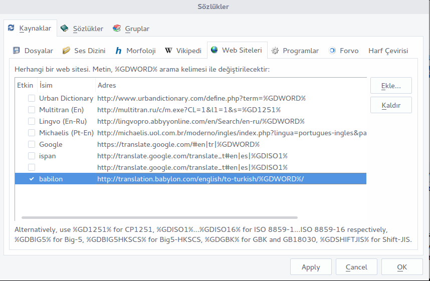
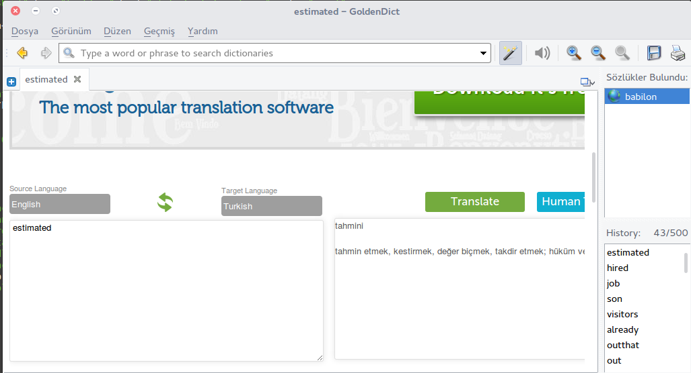

Goldendicti açıp F3 e basın web sitesinden ekleye basıp
Aşağıda ki linki ekleyip etkin hale getirin.
http://translation.babylon.com/english/to-turkish/%GDWORD%/
google translate i yapmayı denedim fakat yazı gözükmüyordu isterseniz babylon dan başka çeviricide ekleyebilirsiniz.
bilinmesi gereken şu %GDWORD% yazan kısmın aramada ki kelimeyle yerdeğiştirdiğinin farkına varmak.

